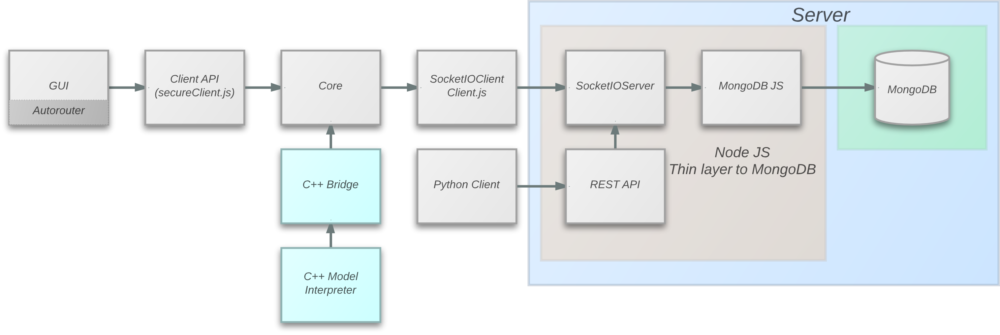

Addisu Taddese
WebGME
node.js
to
C++
Bridge
Problem
WebGME is written in JavaScript (node.js)
Model interpreters have to be written in JavaScript...
Why not JavaScript?
GME users write interpreters using C++, C#, etc.
JavaScript might be too slow for some interpreters
JavaScript is asynchronous/event-based
What we want:
 A lightweight bridge between node.js and C++
"Clean" API without code duplication
Hide the asynchronous nature of JavaScript
Node.js Addons
C++ plugins the provide features from other C and C++ libraries.
Can be used to expose system level calls to JavaScript (e.g. file system)
Challenge
Most addons provide functionality to be used by JavaScript code. We want the other way around.
Documentation is sparse
First Solution
Example: Get the latest commit object
JavaScript
var done = TASYNC.call(COMMON.openDatabase); done = TASYNC.call(COMMON.openProject, done); done = TASYNC.call(getCommit, done); function getCommit(){ var proj = COMMON.getProject(); var hash = proj.getBranchHash('master', null); console.log("Hash: "); TASYNC.call(function(hash){ console.log(hash); }, hash) return TASYNC.call(proj.loadObject,hash); }
First Solution
Example: Get the latest commit object
C++
Handle<Value> CallMethod(Handle<Object> object, const char * method, int argc = 0, Handle<Value> argv[] = NULL){ HandleScope scope; Local<Function> func = Local<Function>::Cast(object->Get(String::New(method))); return scope.Close(func->Call(Context::GetCurrent()->Global(), argc, argv)); } Handle<Value> GetCommit(Handle<Object> common, Handle<Object> tasync){ HandleScope scope; Handle<Value> proj = CallMethod(common, "getProject"); const int argc = 2; Handle<Value> argv[argc] = {String::New("master"), Null()}; Handle<Value> hashFuture = CallMethod(proj->ToObject(), "getBranchHash", argc, argv); const int argc_2 = 2; Handle<Value> argv_2[argc_2] = {FunctionTemplate::New(HashCB)->GetFunction(), hashFuture->ToObject()}; return CallMethod(tasync, "debugcall", argc_2, argv_2); }
Key Insight 1
node-fibers:
to convert asynchronous to synchronous
var Fiber = require('fibers'); function sleep(ms) { var fiber = Fiber.current; setTimeout(function() { fiber.run(); }, ms); Fiber.yield(); } Fiber(function() { console.log('wait... ' + new Date); sleep(1000); console.log('ok... ' + new Date); }).run(); console.log('back in main');
Output:
wait... Fri Jan 21 2011 22:42:04 GMT+0900 (JST) back in main ok... Fri Jan 21 2011 22:42:05 GMT+0900 (JST)
Key Insight 2
C++-11 variadic templates:
for passing variable number of arguments
template<class...A> Handle<Value> CallVar(A...args){ HandleScope scope; const int argc = sizeof...(args); Handle<Value> argv[argc] = {args...}; return scope.Close(WebGME::CallTasyncMethod(func_, argc, argv, object_)); } template<class...A> Handle<Value> operator()(A...args){ return CallVar(args...); }
Now, we can do:
Interpreter* obj = ObjectWrap::Unwrap<Interpreter>(args.This()); FunctionMap& project = obj->project_; Handle<Value> hash = project["getBranchHash"](String::New("master"), Null());
Demo
References
http://nodejs.org/api/addons.html
https://developers.google.com/v8/embed
http://izs.me/v8-docs/main.html
https://github.com/laverdet/node-fibers
http://en.cppreference.com/w/cpp/language/parameter_pack
Thanks to kkaefer:
https://github.com/kkaefer
for slide design